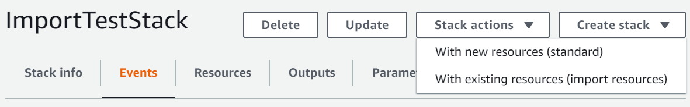

Les traductions sont fournies par des outils de traduction automatique. En cas de conflit entre le contenu d'une traduction et celui de la version originale en anglais, la version anglaise prévaudra.
Création d'une pile à partir de ressources existantes
Au cours de cette opération d'importation, vous devez fournir les éléments suivants.
-
Un modèle qui décrit les ressources qui feront partie de la nouvelle pile et des configurations de ressources. Chaque ressource de votre modèle doit comporter unAttribut DeletionPolicy.
-
Un identifiant unique pour chaque ressource cible. Consultez la console de service appropriée pour obtenir des identifiants uniques.
Dans cette démonstration, nous fournissons l'exemple de modèle suivant, appelé TemplateToImport.json. ServiceTable et GamesTable sont les cibles de l'importation.
{ "AWSTemplateFormatVersion": "2010-09-09", "Description": "Import test", "Resources": { "ServiceTable": { "Type": "AWS::DynamoDB::Table", "DeletionPolicy": "Retain", "Properties": { "TableName": "Service", "AttributeDefinitions": [ { "AttributeName": "key", "AttributeType": "S" } ], "KeySchema": [ { "AttributeName": "key", "KeyType": "HASH" } ], "ProvisionedThroughput": { "ReadCapacityUnits": 5, "WriteCapacityUnits": 1 } } }, "GamesTable": { "Type": "AWS::DynamoDB::Table", "DeletionPolicy": "Retain", "Properties": { "TableName": "Games", "AttributeDefinitions": [ { "AttributeName": "key", "AttributeType": "S" } ], "KeySchema": [ { "AttributeName": "key", "KeyType": "HASH" } ], "ProvisionedThroughput": { "ReadCapacityUnits": 5, "WriteCapacityUnits": 1 } } } } }
Création d'une pile à partir de ressources existantes à l'aide de l'AWS Management Console
Connectez-vous à la AWS Management Console et ouvrez la console AWS CloudFormation à l'adresse https://console.aws.amazon.com/cloudformation
. -
Dans la page Piles choisissez Créer une pile, puis choisissez With existing resources (import resources) (Avec des ressources existantes (importer des ressources)).
 -
Lisez la page Vue d'ensemble de l'importation pour obtenir la liste des éléments que vous devez fournir dans le cadre de cette opération. Ensuite, choisissez Suivant.
-
Dans la page Specify template (Spécifier un modèle) indiquez votre modèle à l'aide de l'une des méthodes suivantes, puis choisissez Suivant.
-
Choisissez Amazon S3 URL (URL Amazon S3), puis spécifiez l'URL de votre modèle dans la zone de texte.
-
Choisissez Upload a template file (Charger un fichier de modèle), puis recherchez votre modèle.
-
-
Dans la page Identify resources (Identifier les ressources), identifiez chaque ressource cible.
-
Sous Identifier property (Propriété de l'identifiant), choisissez le type d'identifiant de ressource. Par exemple, la ressource
AWS::DynamoDB::Tablepeut être identifiée à l'aide de la propriétéTableName. -
Sous Identifier value (Valeur de l'identifiant), tapez la valeur réelle de la propriété. Par exemple, la valeur de
TableNamepour la ressourceGamesTabledans l'exemple de modèle estGames
-
Choisissez Suivant.
-
-
Dans la page Specify stack details (Spécifier les détails de la pile), modifiez les paramètres souhaités, puis choisissez Suivant. Un jeu de modifications est crée automatiquement.
Important
L'opération d'importation échoue si vous modifiez des paramètres existants qui lacent une opération de création, de mise à jour ou de suppression.
-
Dans la page de vérification de
nom de la pile, vérifiez que les ressources correctes sont importées, puis choisissez Import resources (Importer les ressources). Le jeu de modifications créé à la dernière étape est alors automatiquement exécuté.Le panneau Événements de la page Stack details (Détails de la pile) pour votre nouvelle pile s'affiche.

-
(Facultatif) Exécutez la détection de l'écart sur la pile afin de vous assurer que le modèle et la configuration réelle des ressources importées correspondent. Pour plus d'informations sur la détection de la dérive, consultezDétectez la dérive sur l'ensemble d'une CloudFormation pile.
-
(Facultatif) Si vos ressources importées ne correspondent pas aux configurations de modèle attendues, corrigez les configurations de modèle ou mettez directement à jour les ressources. Dans cette démonstration, nous corrigeons les configurations des modèles afin qu'elles correspondent à leurs configurations réelles.
-
Rétablissez l'opération d'importation des ressources affectées.
-
Ajoutez à nouveau les cibles d'importation à votre modèle, en vous assurant que les configurations de modèle correspondent aux configurations réelles.
-
Répétez les étapes 2 à 8 à l'aide du modèle modifié afin d'importer à nouveau les ressources.
-
Création d'une pile à partir de ressources existantes à l'aide de l'AWS CLI
-
Ouvrez la AWS CLI.
-
Vous pouvez exécuter
GetTemplateSummarypour savoir quelles propriétés identifient chaque type de ressource dans votre modèle. Par exemple, la ressourceAWS::DynamoDB::Tablepeut être identifiée à l'aide de la propriétéTableName. Pour la ressourceGamesTablede l'exemple de modèle, la valeur deTableNameestGames.>aws cloudformation get-template-summary --template-url https://DOC-EXAMPLE-BUCKET.s3.us-west-2.amazonaws.com/TemplateToImport.json -
Composez une liste des ressources cibles de votre modèle et de leurs identifiants uniques au format suivant.
[{\"ResourceType\":\"AWS::DynamoDB::Table\",\"LogicalResourceId\":\"GamesTable\",\"ResourceIdentifier\":{\"TableName\":\"Games\"}}] -
Créez un jeu de modifications de type
IMPORTavec les paramètres suivants.--resources-to-importne prend pas en charge le YAML en ligne.>aws cloudformation create-change-set --stack-nameTargetStack--change-set-nameImportChangeSet--change-set-typeIMPORT--resources-to-import "[{\"ResourceType\":\"AWS::DynamoDB::Table\",\"LogicalResourceId\":\"GamesTable\",\"ResourceIdentifier\":{\"TableName\":\"Games\"}},{\"ResourceType\":\"AWS::DynamoDB::Table\",\"LogicalResourceId\":\"ServiceTable\",\"ResourceIdentifier\":{\"TableName\":\"Service\"}}]" --template-url https://DOC-EXAMPLE-BUCKET.s3.us-west-2.amazonaws.com/TemplateToImport.jsonL'AWS CLI prend également en charge les fichiers texte en entrée pour le paramètre
--resources-to-import, comme indiqué dans l'exemple suivant.--resources-to-importfile://ResourcesToImport.txtDans cette procédure pas à pas,
file ://ResourcesToImport.txtcontient les éléments suivants.[ { "ResourceType":"AWS::DynamoDB::Table", "LogicalResourceId":"GamesTable", "ResourceIdentifier":{ "TableName":"Games" } }, { "ResourceType":"AWS::DynamoDB::Table", "LogicalResourceId":"ServiceTable", "ResourceIdentifier":{ "TableName":"Service" } } ] -
Vérifiez le jeu de modifications pour vous assurer que les ressources appropriées seront importées.
>aws cloudformation describe-change-set --change-set-nameImportChangeSet--stack-nameTargetStack -
Exécutez le jeu de modifications pour importer les ressources. Une fois l'opération
(IMPORT_COMPLETE)terminée, les ressources sont importées avec succès.>aws cloudformation execute-change-set --change-set-nameImportChangeSet--stack-nameTargetStack -
(Facultatif) Exécutez la détection de l'écart sur la pile
IMPORT_COMPLETEpour vous assurer que le modèle et la configuration réelle des ressources importées correspondent. Pour plus d'informations sur la détection de la dérive, voirDétecter l'écart sur des ressources de pile individuelles.>aws cloudformation detect-stack-drift --stack-nameTargetStack{ "StackDriftDetectionId" : "624af370-311a-11e8-b6b7-500cexample" }>aws cloudformation describe-stack-drift-detection-status --stack-drift-detection-id624af370-311a-11e8-b6b7-500cexample>aws cloudformation describe-stack-resource-drifts --stack-nameTargetStack -
(Facultatif) Si vos ressources importées ne correspondent pas aux configurations de modèle attendues, corrigez les configurations de modèle ou mettez directement à jour les ressources. Dans cette démonstration, nous corrigeons les configurations des modèles afin qu'elles correspondent à leurs configurations réelles.
-
Rétablissez l'opération d'importation des ressources affectées.
-
Ajoutez à nouveau les cibles d'importation à votre modèle, en vous assurant que les configurations de modèle correspondent aux configurations réelles.
-
Répétez les étapes 4 à 7 à l'aide du modèle modifié afin d'importer à nouveau les ressources.
-